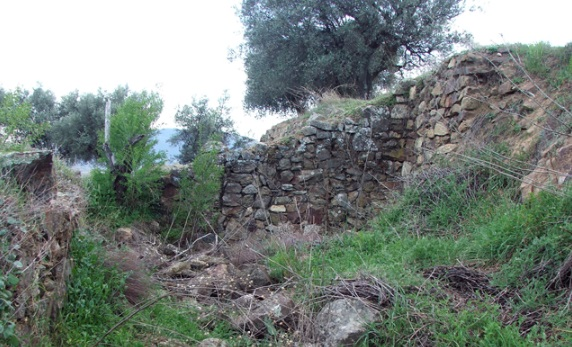

| MONUMENTOS | |||||||
|
|||||||
| LUGARES DE INTERÉS | |||||||
|
Convento de los Franciscanos Menores Descalzos de Cebreros, dedicado al Dulce Nombre de Jesús. Cronológica y geográficamente perteneció a la provincia de San José, siendo fruto de la Reforma Alcantarina o Descalcez, siendo obispo de Ávila Don Alvaro de Mendoza, reinando Felipe II. El Padre Alcalá en la Crónica de la Provincia de San José señala con el nombre y apellidos al fundador Francisco Albornoz, "en el 1573 sacerdote secular, la suma devoción que sentía al Altísimo Nombre de Jesús fue la causa para edificar de su propio peculio un convento dedicado al Dulcísimo Nombre de Jesús." Edificó un convento para doce frailes a las afueras del pueblo de Cebreros a veintiuna piedras o millas ( de mil pasos que señalaban con piedras ) de Ávila. En cuya construcción participó con sus propias manos. En la Biblioteca Nacional de Madrid el manuscrito 1173 dice así: (Crónica de la Provincia de San Joseph ... desde su fundación hasta el año 1584 del padre Ángel de Badajoz, ofm) "En el mismo año se fundó otro Convento en la Billa de Cebreros del Obispado de Ávila, siete leguas della y tres de Cadahalso, hízolo un devoto clérigo de aquel Pueblo que se decía el Bachiller Albornoz, con tanta devoción y con tan inmenso trabajo que lo más della hizo él por sus propias manos, está cerca de la Billa y dedicólo al Nombre de Jesús" Las ruinas del convento están asentadas en la parte Noroeste del pueblo en el lugar conocido por El Valle. Debido a que la legislación de la Orden era muy austera el edificio sería muy simple y las proporciones de la iglesia del convento parecían más una ermita rural con uno o dos altares, seguramente uno frente a otro. En la iglesia parroquial de Santiago Apóstol de Cebreros se conservan dos retablos que se dice que pertenecieron a la iglesia del convento, uno dedicado a San Antonio, de estilo Barroco, con decoración vegetal,del siglo XVIII procedente de la Iglesia Vieja de esta misma localidad y anteriormente del convento. El otro retablo, también de estilo Barroco del siglo XVIII y representativo de la Orden Franciscana; hay un cuadro que representa los estigmas de San Francisco: Con dos brazos cruzados, el brazo de Jesucristo con la llaga y el brazo de San Francisco también con la llaga y una cruz en el centro. También en la iglesia parroquial se encuentra un confesionario procedente del convento, del siglo XVIII, adornada la parte superior de la puerta con un águila bicéfala rodeada por el cordón de San Francisco. En cuanto a las otras dependencias del convento estaba la zona destinada a las celdas de los frailes y la otra, formada por el patio interior, librería, cocina, galería y cuadra, cíjara, huerto al mediodía , fuente y estanque, huerto al poniente y corralito de ciprés al norte. Su pavimento medía 21.063 pies. El convento tuvo varios pleitos, por cuestiones del pago de los diezmos, con los recaudadores de impuestos. La sentencia del rey fue a favor de los frailes. Uno de los pleitos surgió entre el ayuntamiento de Cebreros y el convento: " en el que el convento se negaba a pagar los diezmos procedentes del ganado lanar con el pretexto que es para su consumo y sólo tiene su uso y no la propiedad y que conforme al Derecho Canónico el que adeuda los diezmos no es el señor de la propiedad y sí el que hace suyos los frutos...". En La Real Provisión de Carlos IV, en 1807, con respecto a esta querella reconoce la verdad la Administración, al emitir Provisión ad hoc. (despacho que expiden algunos tribunales, para que se ejecute lo que mandan), aquí el máximo respeto al derecho particular de los Descalzos de Cebreros. La Guerra de la Independencia afectó al convento siendo cerrado en esta época en el 1810. Algunos de los frailes se alistaron en las partidas de guerrilleros. Fray Antonio de Aranjuez y Fray José del Corral se juntaron para ajustar las cuentas que antes no pudieron "ajustar antes a causa de estar los libros y demás muebles terraplenados en una cueva" . A los frailes les costó 14.000 reales las reparaciones de los daños que los invasores causaron al convento. Con motivo de las leyes de Desamortización de Mendizabal el cierre del convento se produjo el 7 de Octubre de 1834 aunque estuvo funcionando hasta mediados de 1835. Gregorio Contreras compra la huerta del convento por 8.673 reales y el 21 de julio de 1843 se subastó el resto del convento en 32.500 reales , se adjudica en 2ª subasta a Santiago López Montenegro por 40.500 reales que lo cede a Gregorio Contreras. En 1850 la iglesia estaba abierta al culto público según D. Pascual Madoz. Según Waddingo el convento estaba concebido para doce religiosos " pro duodecim fratibus conventum instruire fecit " . En la Provisión Real de 1807 se alude a dieciocho moradores, sin incluir huéspedes y transeuntes. Entre algunos de los moradores de este convento destacaremos a:
Algunos de los religioso de este convento se marcharon a cristianizar tierras infieles, entre los que destacan:

 |
||